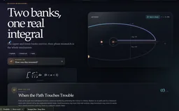

Integral Atlas · A guide to tricky integrals
A work-in-progress study notebook, begun with an Integral Bee puzzle. Worked examples explore symmetry, substitution and parameter tricks, with contour visualizations for selected complex-analysis examples. Broader study labs remain exploratory extensions.
Explore connections
Open the application, then follow what changes
A work-in-progress notebook for studying tricky integrals. Start with a worked example, identify the useful move and inspect a contour when it helps explain the argument. Integral Bee supplied the original puzzle; the focus is now on a smaller set of reusable ideas.
-
01
Recognize the structure
Look for symmetry, a useful substitution or a parameter worth varying.
-
02
Follow the argument
Read a worked route with the conditions that make each step legal.
-
03
See the construction
Inspect contours, branch cuts and separate boundary contributions.
-
04
Check the idea
Try the same move on a related example and track the assumptions it needs.
Recognize the move, then justify it
The core is a set of worked integral examples: recognize a useful symmetry, choose a substitution, introduce a parameter, or draw a contour that makes the calculation easier to follow. The existing library extends well beyond that starting point; this work in progress is being presented as a study collection, with clarity of individual examples as the priority.
Each problem separates recognizing a move from carrying it out. A hint ladder and a worked solution sit beside the reason the move applies, the tempting approach that fails, an alternate route and a sanity check. A collapsible discovery notebook reconstructs how the route might be found: cheap probes are kept, discarded or judged decisive, and independent checks come before the result is trusted.
The contour studio makes the conditions visible. Each preset animates a traversal and lists every piece with its parameterization and its contribution: which closing arc vanishes in the limit, how the two banks of a branch cut differ by a phase, or when an outer circle keeps a term that must be counted.
Four broader study labs remain available as exploratory extensions: Airy paths, elliptic monodromy, integration by level sets and pole recovery from boundary data. They sit outside the smaller focus on worked integrals and contour intuition.
Recover hidden sources from boundary moments
Contour Sonar gets the closest look because it adds a complete numerical pipeline: boundary integrals computed by quadrature, an explicit reconstruction, and diagnostics for when that reconstruction stops being trustworthy. The sonar field is a sum of simple poles with complex strengths, plus an analytic background. Weighting that field by successive powers of z and integrating once around the sources gives normalized moments: Mₖ = (1 / 2πi) ∮ zᵏ f(z) dz = Σ aⱼ pⱼᵏ. Here pⱼ is a source position and aⱼ its strength. The analytic background is holomorphic inside the closed contour, so it contributes nothing to any completed moment.
For a single source, M₀ gives its strength and M₁/M₀ gives its position. Two sources require a different construction. Their moments satisfy a second-order recurrence, whose coefficients encode the sum and product of the two positions. The implementation solves for those coefficients from the first four moments, finds the roots of a quadratic, and recovers the strengths from the first two measurements. This implements Prony reconstruction for one or two sources, with each stage shown.
Compute the measurements independently of the answer
The displayed boundary is approximated by 480 straight segments. Five-point Gaussian quadrature samples each segment, accumulating eight complex moment channels. At each quadrature point, one field evaluation feeds all eight channels; successive powers are formed by repeated multiplication. The partial accumulators are retained, so the animation can show the numerical integral developing as the receiver moves around the boundary.
The reconstruction consumes these numerical measurements. A separate calculation evaluates the exact source moments only to measure quadrature error. That error enters the stability verdict, but the recovered positions and strengths come from the numerical measurements alone. Keeping those paths separate matters: recovering a position from analytically supplied moments would bypass the measurement problem that the visualization is intended to explain.
The quadratic solve also addresses cancellation. It chooses the sign of the square root to form the first root with larger magnitude, then uses the root product to recover the second when possible. Small safeguards like this connect the algebra on the page to the behavior of its floating-point implementation.
Show when a correct identity becomes a fragile reconstruction
As two sources approach one another, their moment signatures become harder to distinguish. The lab exposes a two-source separation signal for the two-by-two moment system: the ratio of its smallest to largest singular value. It compares that signal with an effective noise level, taken as the largest of the injected measurement noise, the quadrature error and a floating-point floor.
The eight channels also permit a separate consistency check. A one-source fit predicts moments two through seven; a two-source fit predicts moments four through seven. These unused moments were not needed to determine the fitted parameters. Their prediction residual can expose a reconstruction that fits the initial moments but fails to predict the remaining channels.
Neither diagnostic certifies the hidden scene. The noise control applies deterministic complex perturbations, and the stability thresholds are heuristics for this finite model. Their purpose is to make conditioning and consistency visible, including the point where an attractive reconstruction should no longer be trusted.
Let the interface expose the mathematical mechanism
The source-plane receiver and the complex accumulator use the same sample index. Deforming the boundary or adding analytic fog changes the intermediate path even when the completed moments remain invariant. Inference becomes available after the receiver completes its lap, and hidden source positions can be revealed separately. That sequencing lets the reader distinguish an observed measurement, an inferred result, and ground truth.
- Start with one hidden pole, complete the boundary lap, and compare the inferred location with revealed ground truth.
- In the fog scenario, change the analytic fog and the boundary shape, replay the lap, and check that the accumulator path changes while the completed moment stays the same.
- Open the Resolution edge scenario, bring the two sources closer or raise the noise, then replay the lap and infer again to compare the separation signal with the unused-moment prediction error.

Recorded examples · 3From real integrals to complex contoursEach selected contour illustrates a different route through the integral library.＋
More recorded views · 1
Current scope
- Work in progress: 42 of the 59 worked problems are taught through complex-analysis methods, so coverage is weighted toward contours. Indefinite integrals, floor-function integrands and limits of integrals are not yet covered.
- Contour Sonar reconstructs one or two simple poles in a prescribed field model. It is not a general source-count estimator or a solver for arbitrary singularities.
- Moment identities require a legal closed contour with the intended sources enclosed and no pole on the boundary. The numerical integration follows the sampled polygonal boundary.
- The measurement perturbations and stability thresholds are controlled demonstrations, not a calibrated physical sensor model or a certified reconstruction-error bound.